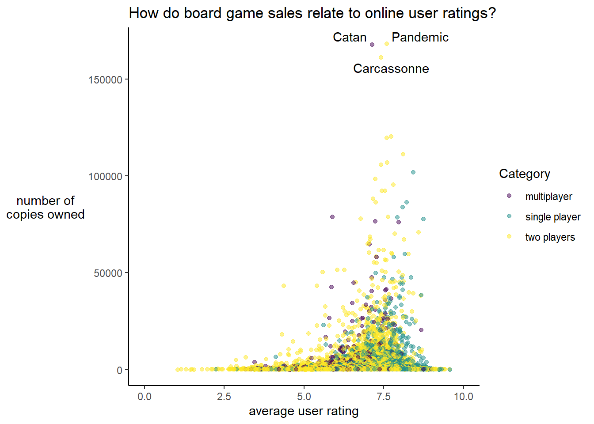

library(dplyr)
library(ggplot2)3 Research of Board Games
NSC-R Tidy Tuesday February 2022
4 Introduction
The dataset for this Tidy Tuesday is about board games! Asier Moneva explores the following research questions: “What are the top 3 best-selling board games by game type?” and “How do board game sales relate to online user ratings?”
5 Load packages
Today’s data are relational, which means there are multiple datasets (rating, details) that can be linked through some identifier or id variable or ‘key’.
6 Import data
ratings <- readr::read_csv("https://raw.githubusercontent.com/rfordatascience/tidytuesday/master/data/2022/2022-01-25/ratings.csv")details <- readr::read_csv("https://raw.githubusercontent.com/rfordatascience/tidytuesday/master/data/2022/2022-01-25/details.csv")7 Explore data
So let’s have a quick look at the data.
glimpse(ratings)Rows: 21,831
Columns: 10
$ num <dbl> 105, 189, 428, 72, 103, 191, 100, 3, 15, 35, 30, 182, 13~
$ id <dbl> 30549, 822, 13, 68448, 36218, 9209, 178900, 167791, 1733~
$ name <chr> "Pandemic", "Carcassonne", "Catan", "7 Wonders", "Domini~
$ year <dbl> 2008, 2000, 1995, 2010, 2008, 2004, 2015, 2016, 2015, 20~
$ rank <dbl> 106, 190, 429, 73, 104, 192, 101, 4, 16, 36, 31, 183, 14~
$ average <dbl> 7.59, 7.42, 7.14, 7.74, 7.61, 7.41, 7.60, 8.42, 8.11, 7.~
$ bayes_average <dbl> 7.487, 7.309, 6.970, 7.634, 7.499, 7.305, 7.508, 8.274, ~
$ users_rated <dbl> 108975, 108738, 108024, 89982, 81561, 76171, 74419, 7421~
$ url <chr> "/boardgame/30549/pandemic", "/boardgame/822/carcassonne~
$ thumbnail <chr> "https://cf.geekdo-images.com/S3ybV1LAp-8SnHIXLLjVqA__mi~glimpse(details)Rows: 21,631
Columns: 23
$ num <dbl> 0, 1, 2, 3, 4, 5, 6, 7, 8, 9, 10, 11, 12, 13, ~
$ id <dbl> 30549, 822, 13, 68448, 36218, 9209, 178900, 16~
$ primary <chr> "Pandemic", "Carcassonne", "Catan", "7 Wonders~
$ description <chr> "In Pandemic, several virulent diseases have b~
$ yearpublished <dbl> 2008, 2000, 1995, 2010, 2008, 2004, 2015, 2016~
$ minplayers <dbl> 2, 2, 3, 2, 2, 2, 2, 1, 2, 1, 3, 2, 1, 2, 2, 2~
$ maxplayers <dbl> 4, 5, 4, 7, 4, 5, 8, 5, 2, 5, 5, 4, 5, 5, 5, 4~
$ playingtime <dbl> 45, 45, 120, 30, 30, 60, 15, 120, 30, 150, 150~
$ minplaytime <dbl> 45, 30, 60, 30, 30, 30, 15, 120, 30, 30, 90, 3~
$ maxplaytime <dbl> 45, 45, 120, 30, 30, 60, 15, 120, 30, 150, 150~
$ minage <dbl> 8, 7, 10, 10, 13, 8, 14, 12, 10, 12, 12, 10, 1~
$ boardgamecategory <chr> "['Medical']", "['City Building', 'Medieval', ~
$ boardgamemechanic <chr> "['Action Points', 'Cooperative Game', 'Hand M~
$ boardgamefamily <chr> "['Components: Map (Global Scale)', 'Component~
$ boardgameexpansion <chr> "['Pandemic: Gen Con 2016 Promos – Z-Force Tea~
$ boardgameimplementation <chr> "['Pandemic Legacy: Season 0', 'Pandemic Legac~
$ boardgamedesigner <chr> "['Matt Leacock']", "['Klaus-Jürgen Wrede']", ~
$ boardgameartist <chr> "['Josh Cappel', 'Christian Hanisch', 'Régis M~
$ boardgamepublisher <chr> "['Z-Man Games', 'Albi', 'Asmodee', 'Asmodee I~
$ owned <dbl> 168364, 161299, 167733, 120466, 106956, 105748~
$ trading <dbl> 2508, 1716, 2018, 1567, 2009, 930, 1110, 538, ~
$ wanting <dbl> 625, 582, 485, 1010, 655, 692, 340, 2011, 924,~
$ wishing <dbl> 9344, 7383, 5890, 12105, 8621, 6620, 5764, 192~You see that the number of observations do not match!
Explore whether both datasets have identical id
identical(details$id, ratings$id)[1] FALSECount how many id are missing.
table(ratings$id %in% details$id)
FALSE TRUE
200 21631 Find which id are present in both datasets. Results not show here because of too long output.
intersect(details$id, ratings$id)Find which id are absent in the dataset with the least observations
setdiff(ratings$id, details$id) [1] 298130 286790 2415 12369 25999 304051 262554 67499 16268 236881
[11] 102750 15391 10889 4875 165190 225303 18536 192323 143663 18704
[21] 33125 297139 7578 32922 143459 237088 311004 195158 12624 201917
[31] 34403 18061 5043 15049 23733 225828 6913 176633 198541 64608
[41] 3610 29268 244268 177566 38836 275284 10544 284617 191292 96626
[51] 8741 7752 136856 12900 30335 189615 183344 36238 39663 314125
[61] 325678 246310 109827 19475 31412 69233 5649 98978 3814 140973
[71] 265039 39278 188968 144378 303676 20533 13094 9860 310880 304666
[81] 279649 40804 8249 245060 246895 10246 14698 172088 6124 20647
[91] 264654 299690 147457 23616 258761 311990 132616 154841 8356 216360
[101] 12169 226237 118561 49050 282410 2493 9398 9578 9512 24079
[111] 3398 147616 7368 170390 36993 23999 316090 11674 9454 34129
[121] 252901 10105 287304 164428 41611 232874 1550 252373 3909 145206
[131] 36366 308870 24857 210350 6839 125585 9113 145400 239523 16830
[141] 19304 40886 21437 328866 244528 252374 17996 22354 283849 14128
[151] 305270 237834 137366 38524 3338 1221 319593 3830 102150 10154
[161] 208800 214486 32324 86443 162888 221208 241611 17433 9736 18687
[171] 104770 8426 247135 233284 11421 13918 31585 2103 210292 276641
[181] 289055 15427 24994 47475 66276 205156 3047 8700 306072 14377
[191] 1191 251026 19044 282389 296644 284839 144874 179124 150429 35499Merge data
df <- inner_join(ratings, details, by = "id")Explore data
glimpse(df)Rows: 21,631
Columns: 32
$ num.x <dbl> 105, 189, 428, 72, 103, 191, 100, 3, 15, 35, 3~
$ id <dbl> 30549, 822, 13, 68448, 36218, 9209, 178900, 16~
$ name <chr> "Pandemic", "Carcassonne", "Catan", "7 Wonders~
$ year <dbl> 2008, 2000, 1995, 2010, 2008, 2004, 2015, 2016~
$ rank <dbl> 106, 190, 429, 73, 104, 192, 101, 4, 16, 36, 3~
$ average <dbl> 7.59, 7.42, 7.14, 7.74, 7.61, 7.41, 7.60, 8.42~
$ bayes_average <dbl> 7.487, 7.309, 6.970, 7.634, 7.499, 7.305, 7.50~
$ users_rated <dbl> 108975, 108738, 108024, 89982, 81561, 76171, 7~
$ url <chr> "/boardgame/30549/pandemic", "/boardgame/822/c~
$ thumbnail <chr> "https://cf.geekdo-images.com/S3ybV1LAp-8SnHIX~
$ num.y <dbl> 0, 1, 2, 3, 4, 5, 6, 7, 8, 9, 10, 11, 12, 13, ~
$ primary <chr> "Pandemic", "Carcassonne", "Catan", "7 Wonders~
$ description <chr> "In Pandemic, several virulent diseases have b~
$ yearpublished <dbl> 2008, 2000, 1995, 2010, 2008, 2004, 2015, 2016~
$ minplayers <dbl> 2, 2, 3, 2, 2, 2, 2, 1, 2, 1, 3, 2, 1, 2, 2, 2~
$ maxplayers <dbl> 4, 5, 4, 7, 4, 5, 8, 5, 2, 5, 5, 4, 5, 5, 5, 4~
$ playingtime <dbl> 45, 45, 120, 30, 30, 60, 15, 120, 30, 150, 150~
$ minplaytime <dbl> 45, 30, 60, 30, 30, 30, 15, 120, 30, 30, 90, 3~
$ maxplaytime <dbl> 45, 45, 120, 30, 30, 60, 15, 120, 30, 150, 150~
$ minage <dbl> 8, 7, 10, 10, 13, 8, 14, 12, 10, 12, 12, 10, 1~
$ boardgamecategory <chr> "['Medical']", "['City Building', 'Medieval', ~
$ boardgamemechanic <chr> "['Action Points', 'Cooperative Game', 'Hand M~
$ boardgamefamily <chr> "['Components: Map (Global Scale)', 'Component~
$ boardgameexpansion <chr> "['Pandemic: Gen Con 2016 Promos – Z-Force Tea~
$ boardgameimplementation <chr> "['Pandemic Legacy: Season 0', 'Pandemic Legac~
$ boardgamedesigner <chr> "['Matt Leacock']", "['Klaus-Jürgen Wrede']", ~
$ boardgameartist <chr> "['Josh Cappel', 'Christian Hanisch', 'Régis M~
$ boardgamepublisher <chr> "['Z-Man Games', 'Albi', 'Asmodee', 'Asmodee I~
$ owned <dbl> 168364, 161299, 167733, 120466, 106956, 105748~
$ trading <dbl> 2508, 1716, 2018, 1567, 2009, 930, 1110, 538, ~
$ wanting <dbl> 625, 582, 485, 1010, 655, 692, 340, 2011, 924,~
$ wishing <dbl> 9344, 7383, 5890, 12105, 8621, 6620, 5764, 192~Looks like there are some duplicated variables!
Not really
identical(df$year, df$yearpublished)[1] FALSEWhat is the difference?
which(df$year != df$yearpublished) [1] 209 297 881 1030 2239 3623 4089 4723 15507 16494 21623Ah, I see!
df$year[21623][1] 3000df$yearpublished[21623][1] -3000Nope. Very different. Can these be row numbers (e.g. spreadsheet)?
identical(df$num.x, df$num.y)[1] FALSEAlmost, but nope.
identical(df$name, df$primary)[1] FALSEwhich(df$name != df$primary)[1] 7222 10903 12599 13233 19925Looks like there is some sort of syntax issue in primary
df$name[19925][1] "Admiral Ackbar \"It's a TRAP!\" GAME"df$primary[19925][1] "Admiral Ackbar \"It\\'s a TRAP!\" GAME"Bingo!
identical(df$playingtime, df$maxplaytime)[1] TRUELet’s drop the duplicated variable
df <- df %>%
select(
- playingtime,
- primary
)Looks like we are good now! Imagine the following:
We want to buy a board game for a friend, but we don’t know which one to get.
We know our friend likes to play alone with his girlfriend sometimes, but some Other times he likes to invite friends over to play.
What are the top 3 best-selling board games by game type?
How do board game sales relate to online user ratings?
What are the top 3 best-selling board games by game type?
df <- df %>%
# Create new variable to define type of game based on number of players
mutate(minplayers_fct = case_when(
minplayers < 2 ~ "single player",
minplayers == 2 ~ "two players",
minplayers > 2 ~ "multiplayer"
))df %>%
# Select only relevant variables
select(
name,
minplayers_fct,
owned
) %>%
group_by(minplayers_fct) %>%
slice_max(owned, n = 3) %>%
knitr::kable()| name | minplayers_fct | owned |
|---|---|---|
| Catan | multiplayer | 167733 |
| Munchkin | multiplayer | 78849 |
| Dixit | multiplayer | 76535 |
| Terraforming Mars | single player | 101872 |
| Scythe | single player | 86371 |
| Wingspan | single player | 83920 |
| Pandemic | two players | 168364 |
| Carcassonne | two players | 161299 |
| 7 Wonders | two players | 120466 |
We have identified the best-sellers for each category, but best-sellers might be a product of marketing rather than an indicator of good quality. It might be the case that players buy the product because of good marketing but then find the game boring, too complicated, etc.
How do board game sales relate to online user ratings?
8 Plot data
df %>%
ggplot(mapping = aes(
x = average,
y = owned,
# Examine if there are clear patterns by number of players
color = minplayers_fct
)) +
geom_point(alpha = .5) +
# There seems to be three outliers that are best-sellers and also have high
# ratings
ggrepel::geom_text_repel(
data = df %>% filter(owned > 150000),
mapping = aes(label = name),
color = "black"
) +
scale_x_continuous(limits = c(0, 10)) +
scale_color_viridis_d() +
labs(
title = "How do board game sales relate to online user ratings?",
x = "average user rating",
y = "number of\ncopies owned",
color = "Category"
) +
theme_classic() +
theme(axis.title.y = element_text(
angle = 0,
vjust = .5
))